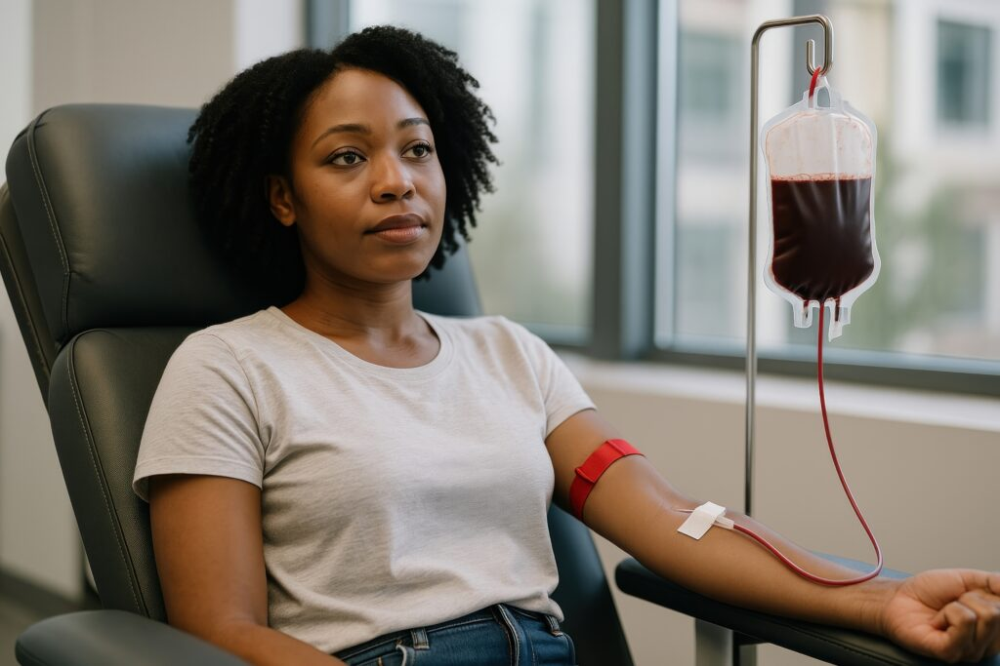
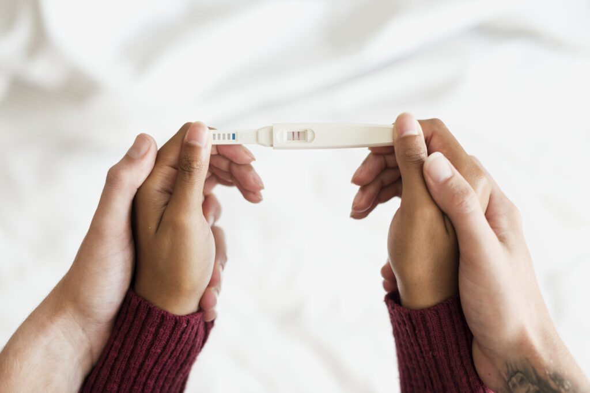
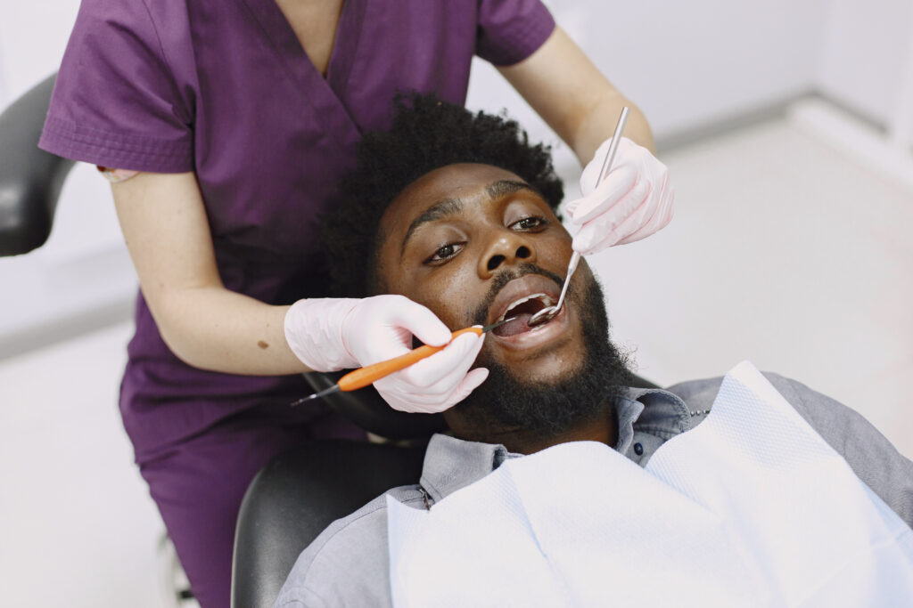

Complete healthcare under one roof
Our services
Your health is our priority. Explore the care available from the WeCare Medical Centre team.
- General Health Check-ups
- Preventive Screenings
- Routine Physical Exams
- Minor Procedures & Suturing
- Common colds, flu, infections
- Family Planning and Contraception
- Diagnosis and Treatment of Illnesses
Family medicine

Obstetrics & Gyneacology
- Antenatal & Postnatal Care
- Natural Birth and Cesarean Section
- Specialist Gynaecologic Consultation
- Advanced Sonar
- Counselling & Screening of Gynae Cancer
- Family Planning/Contraception
- Gynae Procedures & Operations
- Infertility Work Up
- Pap Smears and Pelvic Ultrasound
- Family Planning and Contraception
- Menopause Management

Radiology

- Ultrasound Examinations
- Dental X-ray
- Whole Body X-rays
- CT Scan and Mammogram
Men's Health

- Screening for male-specific health concerns (prostate)
- Erectile dysfunction diagnoses & treatment
- Minor Procedures & suturing
Physio Therapy
- Manual Therapy
- Geriatric Physiotherapy
- Paediatric Physiotherapy
- Sports Physiotherapy
- Musculoskeletal Rehabilitation
IV Therapy(on appointment)

- Mood and brain booster drip
- Vitamin & Mineral booster drip
- Immune booster(flu) drip
- Anti-aging drip
- Detox drip
SpeechTherapy & Audiology
- Foreign body removal
- Wax/Cerumen removal / Earn cleaning
- Ear pain treatment
- Infection treatment/Discharging ears
- Comprehensive hearing test/screening Hearing aid testing & repairs
- Speech treatment due to CVA/Stroke
- Speech NEURO assessment & treatment
- Dysphagia/feeding assessment & treatment (Paediatrics & Adults)
- RAF
Laboratory Services
- Haematology
- Coagulation
- Biochemistry
- Endocrinology
- Virology
- HIV monitoring
- Serology
- Microbiology
- Cytology
- Histopathology
- Molecular Diagnostics
Fertility Clinic

- Fertility screening
- Advanced sperm tests
- Semen freezing
- Artificial insemination
- Post vasectomy semen evaluation
Dentistry

- Braces
- Cleaning teeth
- Fillings
- Extraction of teeth
- Surgical removal of wisdom teeth
- Crowns & Bridges
- False teeth
- Bleeding gums treatment